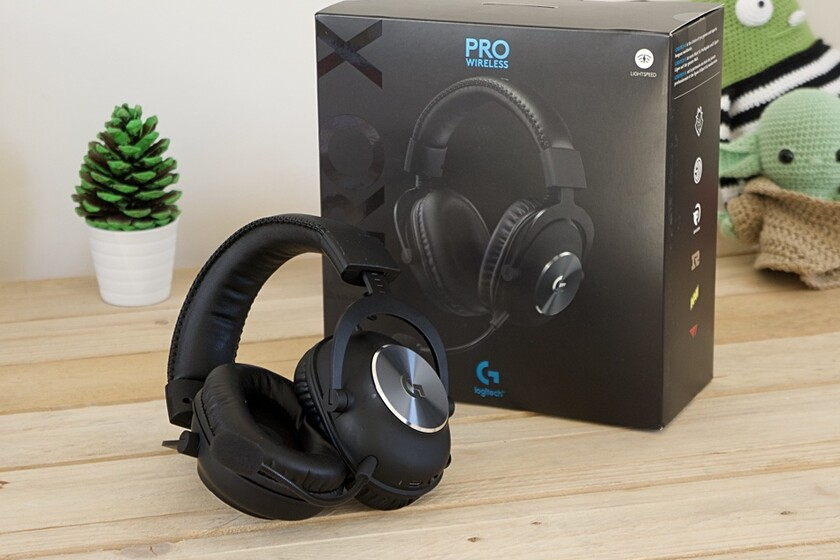
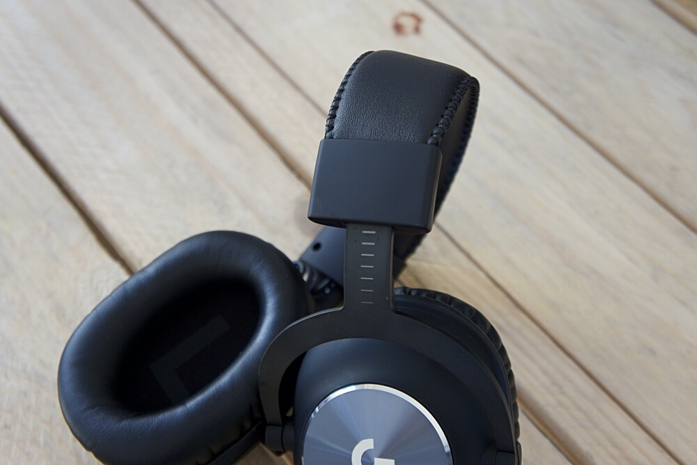
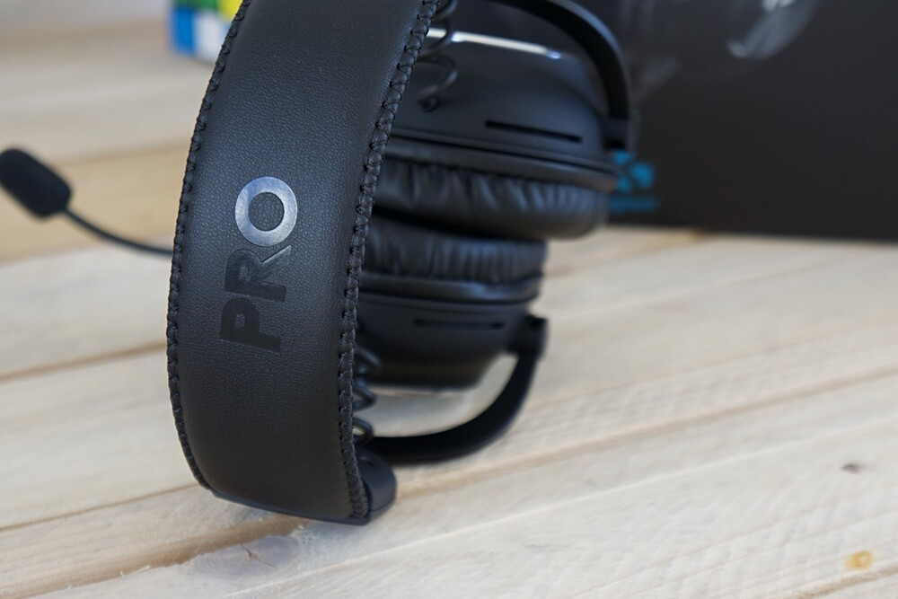
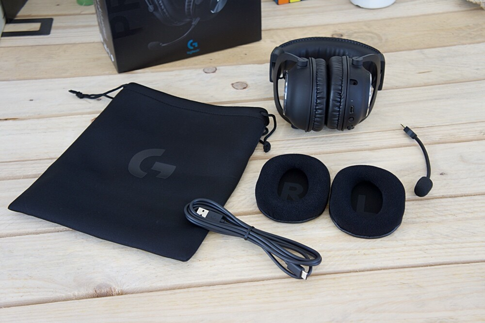
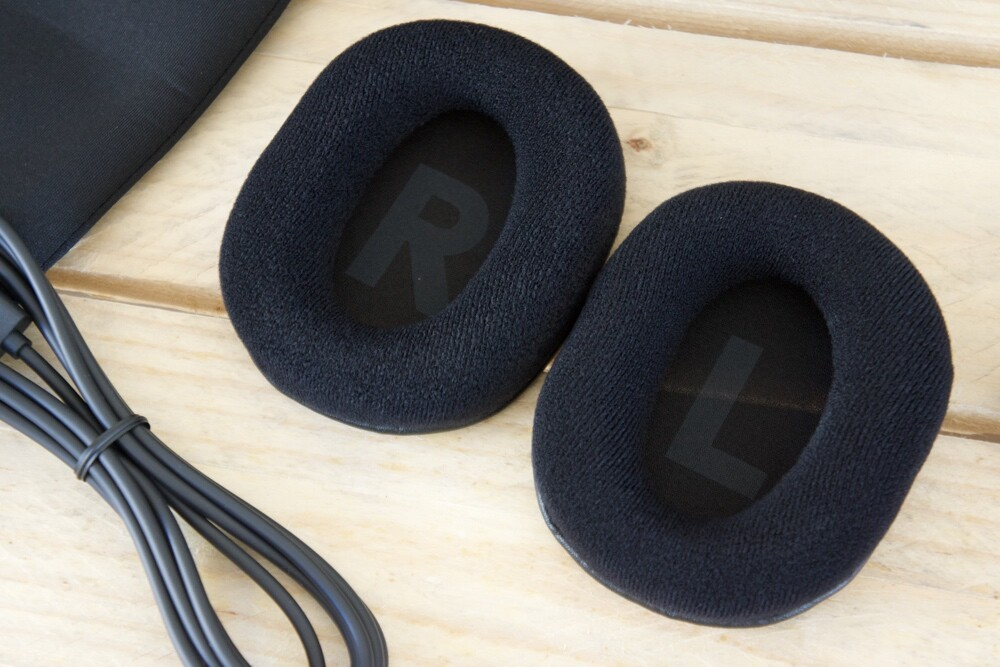
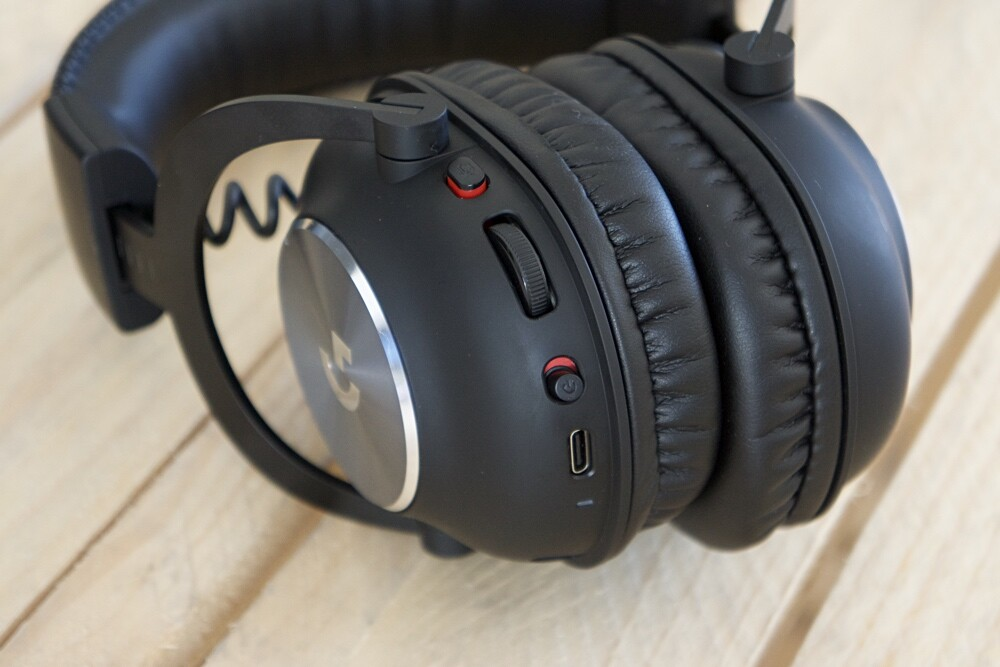
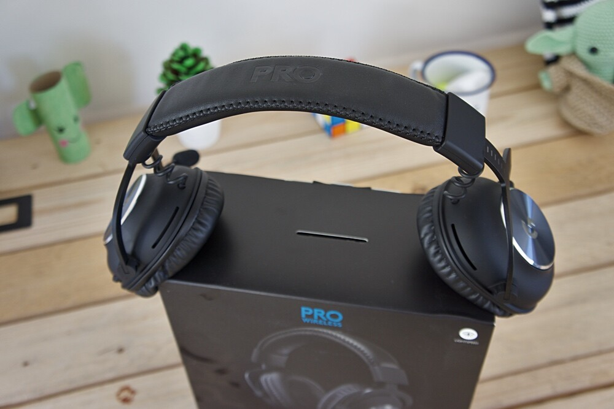

Logitech X Pro Wireless, análisis: sonido envolvente para jugar sin problemas de cables.
"Una de las categorías de productos que más ha avanzado en los últimos años es la del mercado gaming. Se ha pasado rápido de productos llamativos a otros donde la calidad es lo primero. Y está ocurriendo también en los auriculares gaming.
Los Logitech Pro X Wireless son la versión inalámbrica de uno de los mejores productos de audio para jugadores del mercado. Los hemos probado en Xataka para contarte si el nivel de acabado y calidad de audio se mantiene y suma a la tecnología sin cables que es su mayor novedad.
Ficha técnica de los Logitech Pro X Wireless
| LOGITECH G PRO X WIRELESS | CARACTERÍSTICAS |
|---|---|
| Acomplamiento | Circumaural |
| Conectividad | Lightspeed de 2,4 GHz |
| Duración batería | hasta 20 horas |
| Radio acción | hasta 15 metros |
| Transductor | Malla híbrida PRO-G de 50 mm | Imán | Neodimio |
| Impedancia | 32 ohmios |
| Respuesta de frecuencia | 20 Hz - 20 kHz |
| Sensibilidad | 91,7 dB SPL a 1 mW y 1 cm |
| Respuesta de frecuencia del microfono | 100 Hz-10 kHz |
| Patrón captación | Cardioide |
| Peso | 370 g (sin cable) |
| Longitud de cable carga | 1,8 m |
| Precio | 209 euros |
Calidad de acabado y comodidad ante todo
De poco sirven unos excelentes auriculares a nivel sonoro si, partiendo del hecho de que vamos a usarlos de manera intensa en nuestro ocio, nos resultan incómodos para largas sesiones de escucha.
Ese aspecto de unos auriculares, junto el de la calidad de los materiales que deberían darnos una pista sobre su durabilidad y posibilidades de uso, son las primeras que queremos analizar de estos Logitech Pro X Wireless.

Más allá de la calidad de sonido y prestaciones inalámbricas, las cuales valoraremos más adelante, el precio de los Logitech G Pro X Wireless se aprecia en cuanto abrimos la caja, los tanteamos y sobre todo, los empezamos a usar. Logitech ha escogido los materiales de cada elemento con mucho mimo y el resultado en ese sentido le ha salido bastante redondo.
Los elementos más propensos a sufrir con el tiempo, como son la diadema y la horquilla, se han fabricado con acero y aluminio respectivamente. Haciéndolo así ganamos mucha resistencia al uso y seguridad sin renunciar a suficiente flexibilidad para no penalizar la funcionalidad de los auriculares.

La diadema viene recubierta de forma generosa con espuma viscoelástica bajo piel sintética cosida de un gran tacto. La presión que ejerce sobre la cabeza, una vez regulado adecuadamente, es perfecta si te gustan los modelos con diadema consistente. El peso, de 370 gramos, es equilibrado pero tampoco podemos hablar de unos auriculares especialmente ligeros.
En cuanto a la horquilla, es como hemos indicado de aluminio. Admite una regulación de hasta doce puntos marcados sobre el aluminio negro pero la movilidad es algo limitada. Por ejemplo no tienen posibilidad de giro horizontal para un mejor transporte pero con el acabado en aluminio podemos estar bastante tranquilos respecto a su resistencia en comparación con acabados de plástico.

Dos posibilidades para los auriculares
Sin estridencias en el diseño, los auriculares nos avisan de que estamos ante un modelo de la serie G de Logitech gracias el logo en aluminio sobre los auriculares.
Las almohadillas de serie son de espuma viscoelástica y vienen recubiertas con piel sintética muy agradable. Se adaptan bastante bien a la oreja, con buena presión pero sin resultar molestas ni con largas sesiones de uso, y dejan bastante espacio interno.
Logitech incluye en la caja de estos G Pro X Wireless un segundo par de almohadillas con la misma base de espuma viscoelástica adaptable pero con recubrimiento de tela, lo que los hace más frescos pero proporcionando menos aislamiento y más perdida de calidad sonora. Ese aislamiento pasivo muy conseguido es una de las armas de estos auriculares.

La retirada y puesta de nuevo de las almohadillas es sencilla, lo que viene bien para poder realizar una limpieza o lavado de las mismas cuando sea necesario. La indicación de colocación a la derecha o izquierda viene dibujada en el interior de las propias almohadillas.
Los Logitech G Pro X Wireless apuestan todo a la conectividad inalámbrica, no pudiendo usar estos auriculares con cable de ninguna manera
El auricular izquierdo es el que recoge los controles físicos. En él está el botón de encendido/apagado, el “mute” del micrófono, el control de volumen (de tipo rueda) y el puerto USB-C de carga.
Esa ubicación no me parece la más ideal, especialmente en lo que concierne al control de volumen por rueda, que se acciona fácilmente al quitarnos y ponerlos los auriculares si no llevamos especial cuidado.

Por cierto, no busques un puerto de 3.5 mm para una posible conexión por cable porque Logitech lo obvia, dejando este equipo como un sistema 100% inalámbrico, algo que a no todos los usuarios puede convencer.
Tecnología inalámbrica Lightspeed
Los Logitech Pro X Wireless presumen de ser unos auriculares inalámbricos eficientes y fiables gracias a la tecnología Lightspeed. Se trata de una implementación de la propia Logitech sobre la frecuencia de 2.4 GHz.
La gama más avanzada de periféricos gaming de la compañía funcionan bajo esta tecnología sin cables que en el caso de estos auriculares, proporciona hasta 20 horas de autonomía y un alcance de 15 metros.

En casa hemos puesto a prueba el alcance y efectivamente supera los 15 metros sin problemas. Me he podido mover libremente por casi la totalidad de una planta (alrededor de 25 metros de largo) y solo perdía la señal en los extremos.
El enlace con los equipos donde tenemos colocado el stick USB es rápido y fiable. En la configuración disponemos de un modo de apagado automático para ahorrar energía que nos deja escoger el tiempo que damos a los auriculares para apagarse de manera automática si no los estamos usando. Puede ser desde nunca hasta 30 minutos. Si se alcanza ese tiempo, habría que volver a encender y apagar los auriculares para seguir usándolos.
Aunque puedes usarlos con total satisfacción para disfrutar de contenido multimedia por su calidad sonora, los Logitech X Pro Wireless están plenamente enfocados en el juego.
Los Logitech X Pro Wireless, pese a que como vamos a ver, ofrece una calidad sonora que los hace perfectamente compatibles con la escucha de música a un alto nivel, no son modelos pensados para este uso, y por ejemplo no se incluyen controles de reproducción integrados ni tampoco sensores para detectar cuando nos los quitamos para pausar la reproducción de contenido multimedia.
Logitech X Pro Wireless, la opinión de Xataka
Los Logitech G X Pro Wireless han conseguido conformar una estirpe de auriculares reconocidos por su calidad de sonido y diseño robusto pero muy cómodo. La versión inalámbrica que hemos probado en Xataka ha corroborado todas las buenas sensaciones que esperábamos a nivel de calidad de sonido tanto como auriculares multimedia como para gaming..
Nos quedamos sin duda con su perfil para jugadores por las prestaciones del sonido envolvente virtual, la comodidad de uso y el diseño. Y un punto extra el micrófono potenciado con la tecnología de Blue para ir algo más allá que una conversación mientras jugamos. Eso sí, solo podrás usarlo exclusivamente de manera inalámbrica en PCs y consolas con puerto USB disponible..